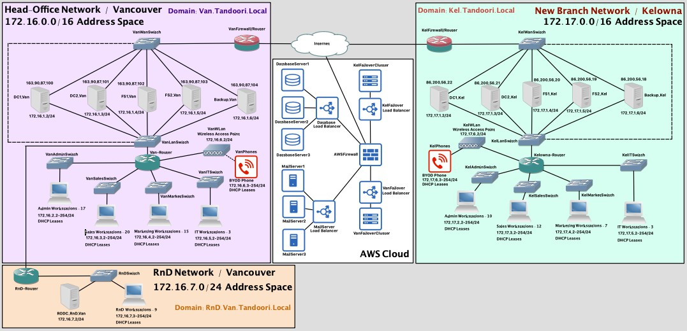
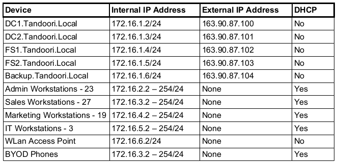
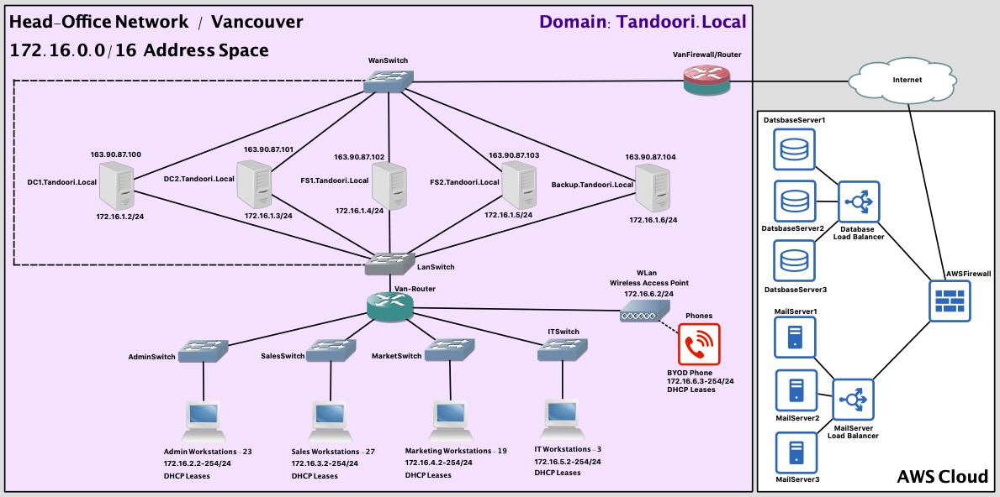
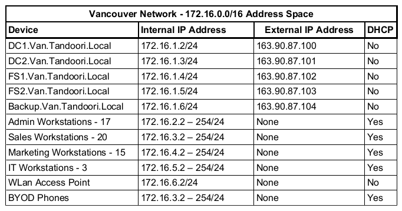
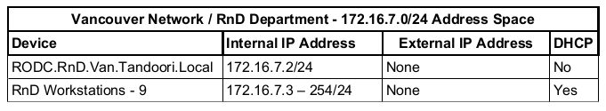
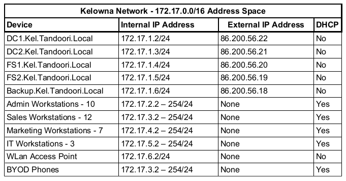
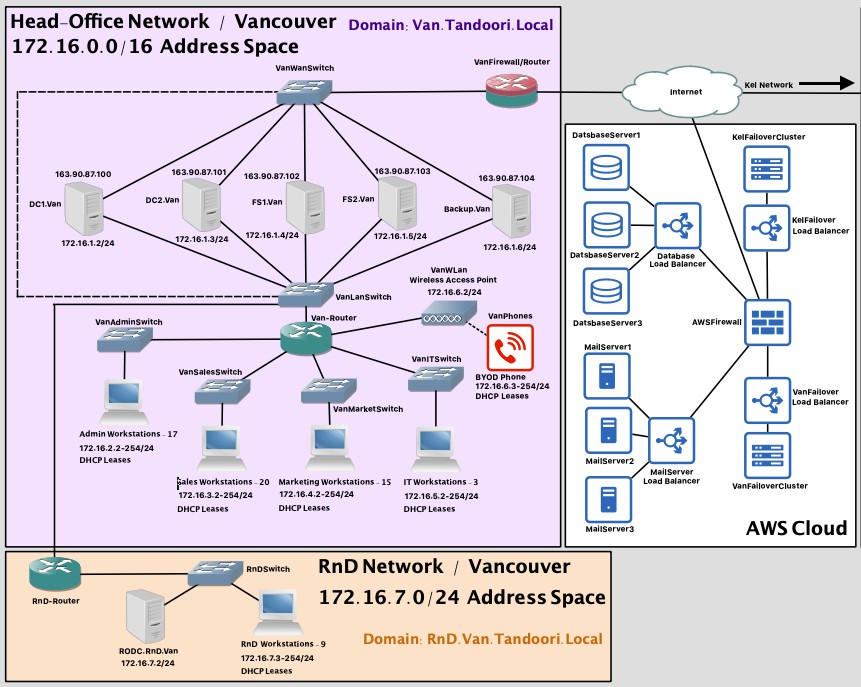
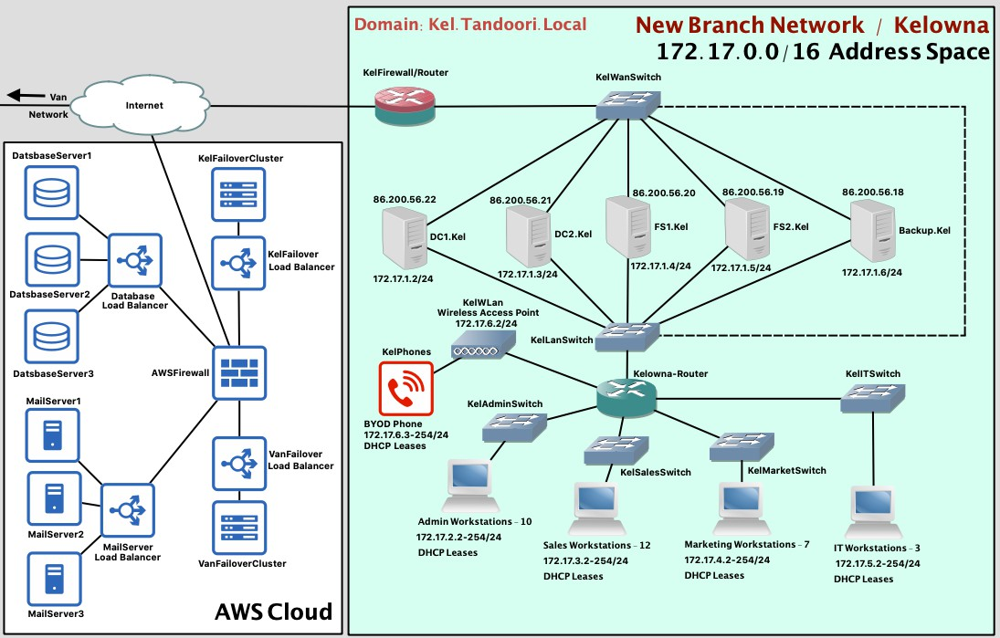

You have been hired with a company who currently has Microsoft Windows Server based network installed. Please refer to the chart below for more details on the network setup. As the company is planning to upgrade and expand their network to the latest Microsoft based network, you are required to perform a system analysis and design to better understand the needs of the business. This business is going to acquire a new location within a month. It is required that you develop a prototype network to explain your design accommodating future expansions. New Location is in Kelowna, British Columbia and it can house up to 40 employees.
| Items | |
|---|---|
| Locations | Head Office - Vancouver |
| Company Size | 72 employees |
| Departments | Administration (23), Marketing (19), Sales (27) and IT (3) |
| Domain Name | tandoori.local |
| Domain Controllers | 2 |
| File Servers | 2 |
| Backup Servers | 1 |
| Database Servers | AWS Cloud Based Service |
| DHCP | Yes |
| Local DNS | Yes |
| Web Servers | 1 |
| Firewall | Yes |
| Antivirus Solution | Yes |
| Mail Server | Cloud Based Service |
| Work Stations + Laptops | 75 |
| BYOD Phone | 72 |
Project Requirements & Future Expansions:
- Company has decided to acquire a new building in Kelowna, BC functioning as a branch office for Interior BC.
- This new location will reflect the same company structure but with fewer employees. There are 17 people moving from Vancouver to Kelowna and 15 new employees are being hired for the new location locally.
- All hardware has already been purchased for this new location.
- Kelowna branch has to be connected with the head-office at all time and all the resources must be available to both locations, but still minimize the WAN traffic.
- With the head office a new network segment has to be created for RnD purpose. There has to be an RODC functioning in this network as well.
- RnD network must acquire IP addresses from the Head-Office network.
- RnD network will have total of 10 machines including the RODC.
Project Deliverables:
- Prototype network designed and implemented in multiple stages.
- A written document, which explains existing network, new network and contrast of them. Support your answer with diagrams. A journal detailing your progress in implementation phase.
1 Project Overview
1.1 Purpose of Document
The purpose of this document is to provide an in-depth system analysis of the existing Tandoori Inc network and to propose designs for the upgrade and expansion of said network.
1.2 Scope
The scope of the project involves an examination of the current network to ascertain where it can be improved. In addition, design and implementation of the future expansion showing contrasts between current and future networks. The proposed solutions must include detailed configurations and address potential growth of the business in the future.
2 Stage 1
2.1 Existing Network Analysis
The existing network is located in Vancouver head office and utilizes 7 on-premises servers comprised of two (2) domain controllers, two (2) file servers, one (1) backup server, one (1) web server, and one (1) firewall/router. In addition, there is one (1) load balanced database server cluster and one (1) load balanced mail server cluster both deployed from AWS cloud infrastructure. There are seventy-five (75) work stations & laptops, seventy-two (72) BYOD phones all with antivirus software installed. All clients that do not require static IP addresses acquire there addresses from a DHCP server on the primary domain controller(Subnet and IP address table are shown in section 2.2 IP Address Table). The exception to this are the BYOD phones, they acquire their local IP addresses from the wireless access point. A local DNS is also installed on the primary domain server. The file servers are configured with a folder hierarchy consisting of a “CompanyData” folder containing four (4) departments, “Administration”, “Marketing”, “Sales”, and “IT”, all departments housing data in public and private folders. ( See Figure 1 )


3 Stage 2
3.1 Future / Proposed Network
A new location in Kelowna will be setup as a branch office for Interior B.C. Seventeen (17) employees from the Vancouver branch will move to the Kelowna branch and fifteen (15) new empoyees will be hired locally. The new branch will require the addition of another subnet and servers to service the new location. The Kelowna branch will be connected to the head office at all times with all resources being available in both locations.
In addition, a new RnD department with it’s own subnet and Read-Only Domain Controller will be setup in the Vancouver branch. All workstations in the RnD Department network segment will acquire IP addresses from the DHCP server hosted on the primary domain controller in the Vancouver head office network. To minimize the WAN traffic the Kelowna branch will house the same amount and kind of servers that the Vancouver branch does allowing for the clients in the Kelowna network to access services in their own location. The Kelowna network will be comprised of two (2) domain controllers, two (2) file servers, one (1) backup server, one (1) web server, and one (1) firewall/router. The domain controllers, file servers, and web server will replicate from the Vancouver branch assuring that all company data and services are in sync across the organization. Active Directory will be updated to include the addition of the new branch and subsequent servers and client machines. A DFS will be setup for the entire business and the folder hierarchy for the previous file servers will be transferred to DFS based file services on the two (2) file servers located at the Vancouver branch. DFS file service must be accessible to RnD network but RnD is restricted to only one folder.
3.2 Fault Tolerance and Availability
Active Directory will be configured to regularly backup all crucial server data to the backup servers hosted in the network that they are located. Failover clusters for both the Vancouver and Kelowna network will be deployed in the company’s already existing AWS infrastructure. These clusters will employ load balancing technology and elastic provisioning should the on premises servers go offline. These strategies will allow for the new system to have excellent fault tolerance and high availability ensuring that the expanded network maintain a high quality of performance.
3.3 Security
Edge routers on both Vancouver and Kelowna networks with act as a firewall and router in one. Local firewalls on all servers and clients will also be configured for maximum protection. In addition, an Inter-Site VPN will be employed so that the Vancouver and Kelowna networks will have a secured/tunneled connection leaving it impossible for man-in-the-middle attacks to occur. Each branch will access the AWS infrastructure through a secure VPN connection as well. The VPN will be configured to utilize the highest level of security available without the need for certificates.
3.4 Administration
For administrative purposes, IT will be given access to all servers and administrative capabilities within the company by means of group policies employed in Active Directory. In addition to being able to perform their duties internally they will also be given administrative access externally through secure VPN connections. This will allow for quick responses to outages or emergencies that occur outside of office hours. Upstream and downstream WSUS servers will be used to ensure smooth updates and upgrades to the various servers and clients in the system. The upstream WSUS server will be hosted on the Primary Domain Controller (DC1.Van.Tandoori.Local) in the Vancouver network and will be managed by IT staff there. The downstream WSUS server will be provisioned on the Primary Domain Controller (DC1.Kel.Tandoori.Local) in the Kelowna network which will inherit update approvals from the upstream server housed in Vancouver. This configuration will save bandwidth on internet connections and allow for updates to be administered entirely by IT staff at head offices in Vancouver. Active Directory Group Policies will be used to implement software deployment and access for the various servers, client machines, and users in the network. Careful considerations will be given to what softwares and accesses will be afforded to the machines and users in the network to ensure that the principle of least privilege is adheard to. Therefore, only necessary software and necessary access will be provisioned using Group Policies in the Active Directory environment.
3.5 BranchCache
To optimize WAN bandwidth BranchCache technology will be utilized for company data. The two (2) file servers located at the Kelowna branch will be configured as hosted cache servers and will cache data housed in the file servers located at the Vancouver branch. This will allow for quick retrieval of company data for clients located in the Kelowna network and will ensure continuity of data across the entirety of the organization’s infrastructure.
3.6 Future Network – IP Address Tables
Subnets were designed in a way to allow for large amounts of room for growth. Both Vancouver and Kelowna networks were allocated a 16 bit address space to give plenty of room to add new departments or even resubnet the existing subnets to allow for more room if departments outgrow their allocated space. Even the subnets for each department were created very large (given a 24 bit address space) to allow for growth within the department. The RnD department network was given a 24 bit address space that well exceeds its need at this current time. ( See Figure 2 )



3.7 Future Network Diagrams


4 Future IPv6 Implementation
4.1 DirectAccess
Even though the internet will eventually move towards IPv6 only, by and large IPv4 is still predominantly used today. This presents a problem because when your company makes the switch you will have communication issues with external clients using IPv4 that try to access your services. DirectAccess uses IPv6 transition protocols to facilitate communications with IPv4 connections. In my professional opinion I believe you should invest your time and energy into converting soon and using DirectAccess to address the communications issues that come with it. However, I think you should implement the pending network expansion first and allow the company time to adjust to the new infrastructure before making the switch. After 2 – 5 years operating with the new branch network and RnD department network your IT team should have all of the major issues worked out, giving you the right circumstances to move ahead with transitioning to IPv6. Please consult the references to DirectAccess technology posted in the Appendix of this document to become more familiar with the process and to help you make an informed decision.
Appendix
References
DirectAccess
https://directaccess.richardhicks.com/2014/10/28/directaccess-ipv6-transition-protocols-explained/
WSUS Servers
https://docs.microsoft.com/de-de/security-updates/windowsupdateservices/18127375
https://askme4tech.com/how-install-configure-wsus-downstream-server-windows-server-2016
BranchCache
https://docs.microsoft.com/en-us/windows-server/networking/branchcache/branchcache
Principle of Least Priviledge
https://www.cisa.gov/uscert/bsi/articles/knowledge/principles/least-privilege